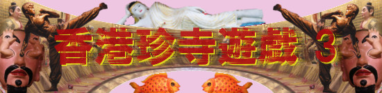
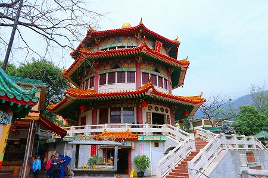

圓玄学院/荃灣
西方寺のすぐ隣にある圓玄学院。
ここが最後の訪問地となる。
圓玄学院とは言うが、いわゆる学校ではなく、儒教、仏教、道教の混成寺院である。
中華圏ではこの儒仏道の寺院は結構多い。
ただし、このお寺に関しては基本的に道教がメインとなっているようだ。
先ほど西方寺から見えた八角堂。

圓玄学院の中央部にあり、明らかにここのシンボルとなっている。
八角三層の建物だが、基壇部は元辰殿となっている。
中に入ると円形の部屋の壁面に沿って神像が祀られている。
その線香の数といったら！
ただし線香には火はついていない。コレだけの線香を屋内で焚いたらとんでもないことになっちゃうので屋外の大きな香炉に手向けることになっている。
それでも大量の換気扇がフル回転している。ということはたまには着火しちゃう人もいるのかも知れないですね。
中央には供え物が山積みされており、参拝者も次から次へとやってくる。
かなりの人気参拝スポットとお見受けしたよ。
中央正面には斗姥元君の像が祀られている。
斗姥元君とは人間の寿命を司る女神とされている。
仏教の摩利支天が道教化された神とも言われている。
そして斗姥元君を囲むようにずらりと並ぶのは六十体の太歳像。
ウサギのかぶりモノを欠かさない神様や常にマジックハンドを持ってる神様など様々。
そして六十太歳といえば忘れてはならないのがこちらのお方。
目から手、でお馴染みの甲子太歳金辨大将軍サマである。
当サイトの熱心な読者であれば過去にも紹介している神様なのでご存知であろう。
この奇天烈なルックスの神様、近年漫画で有名になった明時代の小説「封神演義」から生まれた神様だ。
何でも王に諫言をしたために目をえぐられたら、その行いの正しさゆえ目から手が生えてきちゃったという話。
目から手が生えてきちゃったらそれは罰ゲームとしか思えないんですけど…。
神様仏様御先祖様への供え物を販売している売店。
小腹が空いたのでお菓子でも買おうかと思ったらお供え物や線香しか売ってませんでした。
そんな元辰殿から階段を登るとそこは八角塔の一層目。
三教大殿、とある。
内部に入ると見上げるばかりの吹きぬけに圧倒される。
正面には釈迦像、孔子像、老子像の三教の聖人が並び、額には渾然一体とある。
まさにこの寺のコンセプトを明確に示しているではないか。
ちなみにこの八角堂（三教大殿というそうな）が落慶したのが1970年。
隣の西方寺が開山した年に当たる。
つまり西方寺の萬佛寶塔とほぼ同時期に建設されたわけだ。

香港の郊外の隣同士にコレだけ立派な八角塔が同じ時期に建立されたのは偶然とは思えない。
何らかの理由があるのだろうがそこは今後機会があったら調べてみます。
案外、お隣が塔を作り始めたから対抗して作ったのかもしれないね。
結局三層に見えたが内部は吹き抜けだったので上の階にも行けるわけでもなく、ぼんやりと遠くを眺めてみたり。
先ほどの西方寺とまったく同じ光景だった。
境内には池があり、小さな築山があった。
小さな、とは言うものの日本ではあまりお目にかかれないスケールの築山で、途中には五重塔や人形、階段などが設けられており、見ごたえがある。
また洞窟や滝なども作られており、見ていて中々飽きないのだ。
仏教要素もしっかりアピール。
報本堂というところには写真がびっしり貼られていた。
ご先祖様の供養コーナーなのだろう。
ただしスペース的には納骨堂ではないみたい。
大量の金銀財富袋をぶら下げた人が次々とやってくる。
中身は亡くなった先祖に捧げる冥銭などだろう。
先祖の祖霊を祀る清明祭の時期なので参拝客も多いのか。
一通り境内を見たので帰ろうと思ったら片隅の建物からチャカポコチャカポコと音が聞こえてきた。
近づいてみると道士の人たちがお経をあげている。
面白そうなので近くで見てみる。
道士の脇には祭壇が設けられている。
そうか。これは亡くなった人の追善供養なのか。
神妙な様子の遺族とチャカポコサウンドがやけに不釣合いだった。
時たま少年が出てきて外の冥宅（死者のために作られた家）の窓に札束を突っ込んでいる。
札束で充満した家を後で燃やすのだろう。豪勢なことだ。
こんな感じだった。
屋外には家だけでなく、長持や灯明、人形なども奉納されていた。
あ、金の橋と銀の橋まで奉納してるぞ。
まさか土木モノまで奉納するとは！恐るべし。
これらは全て紙でできていて、法事の後に燃やしてあの世に送り届けるのだ。
人形は召使の意味なのだろうか。
茶紙に覆われた冥宅は次に法事をする遺族が奉納する予定のものだろう。
お、次の家は車も奉納するのかあ。ずいぶん気張ったなあ。
ガレージのようなところには高級車が３台停まっていた。
説明版があったので駐車しているのではなく展示なのだろう。
車に詳しくないが財力を誇示しているのか？
だとしたらあまり宜しい趣味とはいえないが、ま、それはそれで香港っぽいと思います。
見れば隣の西方寺の萬佛塔が。
…というわけでこの辺で香港珍寺遊戯の旅はお開きである。
今回はお寺以外で散々遊んでしまったので、修行がおろそかになってしまったことをこの場をお借りしてお詫び申し上げる次第である。
ま、でも次香港に行ってもこんな感じだろうなー。
てなわけで再見！
香港珍寺遊戯3
終劇